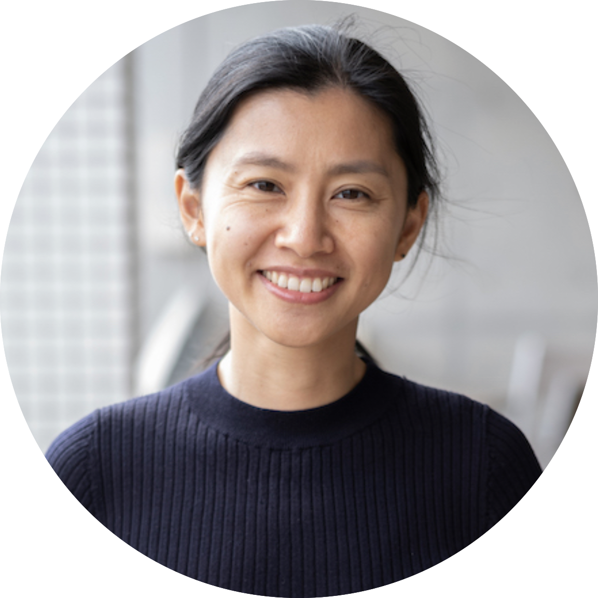

RESEARCH
I am a computational and observational cosmologist. My research focuses on the large-scale structures of our universe –– dark matter, halos, filaments, and voids.
I aim to elucidate fundamental physics, such as inflation, the nature of dark energy, and neutrino mass,
using cosmological observations of the cosmic microwave background and galaxies together with state-of-the-art numerical simulations.
I am the director of
Center for Data-Driven Discovery (CD3) at
Kavli IPMU.
I am a member of
LSST,
Simons Observatory (SO),
HSC,
PFS,
Euclid,
LiteBIRD, and
CMB-S4.
I co-lead LSST DESC's higher-order statistics topical team (with Joachim Harnois-Deraps) and SO's Extragalactic Sky Modeling Foregrounds Analysis Working Group
(FG.1, with
Zack Li).
I also co-lead the upcoming
HalfDome Cosmological Simulation effort with
Adrian Bayer,
Zack Li, and
Joe DeRose.
I welcome students and postdocs to work with me. Please reach out if you are interested!
Travel Schedule
2024/05/20-24 Talk at
COSMO21, Chania, Crete, Greece
2024/05/24-26 Heraklion, Crete, Greece
2024/05/26-29 Talk at University of Vienna, Austria
2024/05/29-06/03 Talk at SISSA, Trieste, Italy
2024/06/03-04 Talk at University of Milano-Bicocca, Milan, Italy
2024/07/22-25 Simons Observatory Collaboration Meeting, Chicago, USA
2024/07/25-28 Toronto, Canada
2024/07/28-08/05 NYC (Columbia, CCA) and Princeton, USA
2024/08/05-08/09 Stanford and Berkeley, USA
2024/09/02-06
AstroAI Asian Network summer school, Osaka
2024/09/16-22 Teach at "The Fundamentals" summer school, Split, Croatia
2024/10/05-08
STS Foruma, Kyoto
Education
2011-2016: PhD in Astronomy,
Department of Astronomy, Columbia University
2006-2008: MA in Human Resources & Industrial Relations,
Carlson School of Management, University of Minnesota
2002-2006: BA in Business Management,
Guangdong University Of Finance and Economics
Appointments
2023-Present: Director,
Center for Data-Driven Discovery, Kavli IPMU
2021-Present: Associate Professor,
Kavli IPMU, University of Tokyo
2019-2021: BCCP Postdoctoral Fellow,
Berkeley Center For Cosmological Physics, UC Berkeley
2016-2019: NSF Postdoctoral Fellow,
Department of Astrophysical Sciences, Princeton University
2012 summer:
NSF EAPSI/
JSPS Summer Program Fellow,
Japan Aerospace Exploration Agency
2009-2011: Research Assistant, Astronomy, Columbia University
Publications
Google Scholar,
Arxiv,
ADS
Mentoring
Postdoc:
Kateryna Vovk (2023-present, Kavli IPMU, with John Silverman)
Hideki Tanimura (2022-2024, Kavli IPMU)
Junjie Xia (2022-present, Kavli IPMU)
Joaquin Armijo (2022-present, Kavli IPMU)
Graduate:
Jessica Cowell (2022-present, U Tokyo/Oxford, co-advise with David Alonso)
Yici Zhong (2022-2024, U Tokyo)
Akira Tokiwa (2022-present, U Tokyo)
Leander Thiele (2021-2022, Princeton) -> IPMU faculty
Daniela Grandón (2021-2023, U Chile) -> Leiden U PD
Adrian Bayer (2020-2023, Berkeley) -> Princeton/CCA PD
Zack Li (2017-2019, Princeton) -> CITA PD
Will Coulton (2017-2018, Princeton) -> Cambridge PD
Gabriela Marques (2017-2019, Observatório Nacional-Rio de Janeiro) -> Florida State PD
Christina Kreisch (2017-2018, Princeton, co-advise with Alice Pisani) -> Industry
Undergraduate:
James Sunseri (2020-2023, Berkeley, co-advise with Zack Li) -> Princeton PhD
Darby McCauley (2022, Berkeley) -> UIUC PhD
Geoffrey Zheng (2019, Princeton) -> Yale PhD
Gemma Zhang (2019-2020, Princeton, co-advise with Zack Li and David Spergel) -> Harvard PhD
Ayanna Mathews (2018, Princeton) -> U Chicago PhD
Ryan Golant (2017, Princeton) -> Columbia PhD
Alvaro Ortiz-Vazquez (2015-2016, Columbia, co-advise with Colin Hill) -> Industry
Public Data
I put great effort into releasing my simulations. Here you can download cosmological simulation data that my collaborators and I generated:
cd3.ipmu.jp,
ColumbiaLensing.org.
I thank New Mexico State University (USA) and Instituto de Astrofisica de Andalucia CSIC (Spain) for hosting the
Skies & Universes site, which made the public access to some of my data possible.
Talks
Upcoming:
2024/09/16-22 Invited: Summer school "The Fundamentals", Split, Croatia
2024/06/03 Invited: Seminar, University of Milano-Bicocca, Italy
2024/05/31 Invited: IFPU Colloquim, SISSA, Italy
2024/05/27 Invited: Colloquium, University of Vienna, Austria
2024/05/20-23 Invited:
COSMO21: Statistical Challenges in 21st Century Cosmology Conference, Chania, Crete, Greece
Past:
2024/03/20 Invited: Colloquim, Hongkong University, Hongkong, China
2024/03/04-06 Invited:
KEK Cosmo2024 Workshop, KEK, Tsukuba, Japan
2024/02/26 Invited: LeCosPA-ASIAA Joint Colloquium, National Taiwan University, Taiwan
2023/12/08 Invited: "Time-Domain Astronomy and Cosmology in the LSST Era", Kavli IPMU, Kashiwa, Japan
2023/10/30 Contributed:
The 14th RESCEU Symposium, University of Tokyo, Tokyo, Japan
2023/10/06 Invited: Seminar, UC Riverside, Riverside, CA, US
2023/10/05 Invited: Seminar, University of Southern California, Los Angeles, CA, US
2023/10/04 Invited: Colloquium, UCLA, Los Angeles, CA, US
2023/09/26 Invited: Seminar, UC Berkeley/LBL, Berkeley, CA, US
2023/09/14 Contributed: Subaru in the era of Euclid, NAOJ Mitaka campus, Japan
2023/09/01 Invited: Colloquium (remote),
Statistical Methods and Machine Learning in High Energy Physics Workshop, ICTS, Bengaluru, India
2023/07/31 Invited: CMB-S4 Collaboration Meeting, SLAC, California, US
2023/02 Invited: "ML at HEP" Workshop, KEK, Japan
More (before 2023)
2022/12 Invited: "Unsolved Problems in Astrophysics and Cosmology" Workshop, Jerusalem, Israel
2022/10 Invited: Colloquium (remote), Tsinghua University, Beijing, China
2022/09 Invited: Colloquium (remote), Shanghai Jiao Tong University, Shanghai, China
2022/08 Invited: Seminar (remote) for the FoPM program at The University of Tokyo, Japan
2022/08 Invited: “Consensus Cosmic Shear in the 2020s” IAU-FM3, Busan, South Korea
2022/07 Invited: Seminar (remote), Beyond AI, Japan
2022/07 Invited: Colloquium, JAXA/ISAS, Sagamihara, Japan
2022/05 Invited:
“From Planck to the future of CMB” Conference, Ferrara, Italy
2022/04 Invited: Seminar (remote) University of Sydney & The University of New South Wales, Sydney-CPPC
2022/03 Invited: Seminar (remote) at Imperial College Particle Phenomenology, Particle Astrophysics & Cosmology (3-PAC)
2021/07 Contributed: virtual talk at
Cosmology from Home
2021/06 Invited: Seminar (remote), University Observatory Munich at the Ludwig Maximilians University, Munich, Germany
2021/04 Invited: Colloquium (remote), Caltech Astronomy, Pasadena, CA
2021/04 Invited: Colloquium (remote), University of Florida Physics, Gainesville, FL
2021/04 Invited: Colloquium (remote), Texas A&M, College Station, TX
2021/03 Invited: Colloquium (remote), Kavli IPMU, Kashiwa, Japan
2021/03 Invited: Colloquium (remote), University of Southern California, Los Angeles, CA
2021/01 Invited: Colloquium (remote), Aarhus University, Aarhus, Denmark
2020/10 Invited: Colloquium (remote), Florida Tech, Melbourne, FL
2020/10 Invited: Colloquium (remote), Leiden University, Leiden, Netherlands
2020/04 Invited: Seminar (remote) at McGill University, Montreal, Canada
2020/03 Invited: Seminar at UC San Diego, CA
2020/02 Invited: Colloquium at Purdue University, West Lafayette, IN
2019/10 Invited: Seminar at Perimeter Institute, Waterloo, Canada
2019/07 Invited:
Precision Investigations of the Neutrino Sector (PINS 2019), SLAC, CA
2019/04 Invited: Seminar at University of Victoria, BC, Canada
2019/04 Invited:
Rising Stars in Physics Workshop, Stanford, CA
2019/03 Invited: Dark Universe Seminar at Brandeis University, Boston, MA
2019/03 Invited: Seminar at Columbia University, New York, NY
2019/03 Invited: Princeton Thunch, Princeton, NJ
2019/02 Invited: Seminar at LBNL Institute for Nuclear and Particle Astrophysics, Berkeley, CA
2019/02 Invited: Seminar at New York University, New York, NY
2019/01 Invited:
Accurate lensing in the era of precision Cosmology, UC Berkeley, CA
2018/12 Invited: Colloquium at Harvard ITC, Cambridge, MA
2018/11 Invited: Seminar at UBC, Vancouver, Canada
2018/11 Invited: Seminar at Simon Fraser University, Vancouver, Canada
2018/11 Invited: Seminar at TRIUMF, Vancouver, Canada
2018/11 Invited: Colloquium at University of Edinburgh, UK
2018/11 Invited: DAMTP Journal Club at University of Cambridge, UK
2018/11 Invited: Seminar at CEA Saclay, France
2018/10 Invited: Seminar at Institut Henri Poincaré, Paris, France
2018/09 Invited: Colloquium at University of Arizona Theoretical Astrophysics Program, Tucson, AZ
2018/07 Invited: Seminar at Caltech TAPIR, Pasadena, CA
2018/07 Invited: 8th Forum for New Leaders in Space Science, CAS-NAS, Pasadena, CA
2018/07 Invited:
Unsolved Problems in Astrophysics and Cosmology, Budapest, Hungary
2018/06 Invited:
PASCOS2018, Cleveland, OH
2018/05 Invited: Princeton Astronomy Advisory Council, Princeton, NJ
2018/01 Invited: Seminar at University of Science and Technology of China, Hefei, China
2018/01 Invited: Seminar at Purple Mountain Observatory, Nanjing, China
2018/01 Invited: 7th
Forum for New Leaders in Space Science, CAS-NAS, Guangzhou, China
2018/01 Invited: Seminar at University of New South Wales, Sydney, Australia
2018/01 Invited: NSF Astronomy and Astrophysics Postdoctoral Fellows Symposium, Washington D.C.
2018/01 Invited:
Modeling the Extragalactic Sky, UC Berkeley, CA
2017/09 Invited: Seminar at Observatório Nacional, Rio de Janeiro, Brasil
2017/09 Invited: Kavli CMB Lensing Workshop, Stanford University, Stanford, CA
2017/05 Invited: Princeton
Thunch, Princeton, NJ
2017/03 Invited: Seminar at University of Chicago Kavli Institute for Cosmological Physics, Chicago, IL
2017/03 Invited: Black Hole Network: Supermassive Black Hole Binary Workshop at the Center for Computational Astrophysics, New York, NY
2017/02 Invited: Astrophysics Seminar at Rutgers University, New Brunswick, NJ
2016/10 Invited: Informal Seminar at IAS, Princeton, NJ
2016/10 Invited: HSC Science Discussion at Princeton University, Princeton, NJ
2016/10 Invited: Seminar at University of Pennsylvania, Philadelphia, PA
2016/09 Invited: Seminar at Tsinghua University, Beijing, China
2016/09 Invited:
Lunch talk at Peking University, Beijing, China
2016/09 Invited: Seminar at National Astronomical Observatories of China, Beijing, China
2016/07 Contributed:
Celebrating a century of gravitational lensing, Leiden, Netherland
2016/05 Contributed:
Cross-correlation Spectacular with LSST, Long Island, NY
2016/05 Invited: Columbia University Astronomy Colloquium, New York, NY
2016/03 Contributed:
Rencontres de Moriond Cosmology, La Thuile, Italy
2016/01 Contributed:
Essential Cosmology for the Next Generation, Cancun, Mexico
2016/01 Contributed:
227th AAS Dissertation Talk, Kissimmee, FL
2015/11 Invited: Astronomy Seminar at University of Hawaii, Honolulu, HI
2015/11 Contributed: JSPS 6th Multidisciplinary Science Forum at UC Davis, Sacramento, CA
2015/11 Invited: Joint Princeton/IAS Cosmology Lunch, Princeton, NJ
2015/07 Contributed:
Theoretical and Observational Progress on the LSS, Garching, Germany
2015/05 Invited: Joint Stony Brook/Brookhaven National Lab Cosmology Seminar, Stony Brook, NY
2014/11 Invited: Seminar at Jiaotong University, Shanghai, China
2014/10 Invited: Seminar at National Astronomical Observatories of China, Beijing, China
2014/03 Contributed:
Rencontres de Moriond Cosmology, La Thuile, Italy
2014/01 Contributed:
Essential Cosmology for the Next Generation, Cabo San Lucas, Mexico
Observing Runs
(Once a while, I observe active galactic nuclei using optical telescopes, hoping to find supermassive black hole binaries...)
2018/08/14 Palomar 200" (Co-I)
2018/06/17 Palomar 200" (Co-I)
2016/03/03-03/07 MDM 2.4m Modspec + Echelle (Co-I)
2013/05/01-05/05 MDM 2.4m ModSpec + Templeton 1k (PI)
2011/06/26-07/04 MDM 2.4m CCDS
2010/12/28-2011/01/02 MDM 2.4m OSMOS
2010/06/07-06/08 MDM 2.4m CCDS (PI)
2010/03/12-03/16 MDM 2.4m CCDS
2009/12/14-12/20 MDM 2.4m CCDS & 1.3m Templeton
2009/08/19-08/25 MDM 2.4m CCDS & 1.3m Templeton
2009/05/25-05/28 MDM 2.4m CCDS with Retrocam
2009/03/17-03/18 MDM 2.4m CCDS (Part of an observing class)